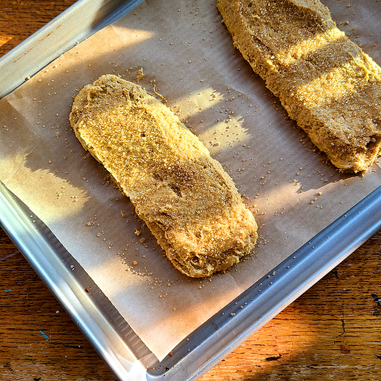

Part Three
- Scoop the dough onto the prepared baking sheet.
- Divide it in half, and shape it into two 10" x 2 1/2" logs.
- Pat the logs into long rectangles, and smooth their tops and sides; a wet spatula or wet bowl scraper works well here.
- Sprinkle with coarse white sparkling sugar and/or cinnamon-sugar, if desired, pressing it in gently.
- Bake for 25 minutes. Remove it from the oven.
- Reduce the oven temperature to 325°F.

Back | Continue